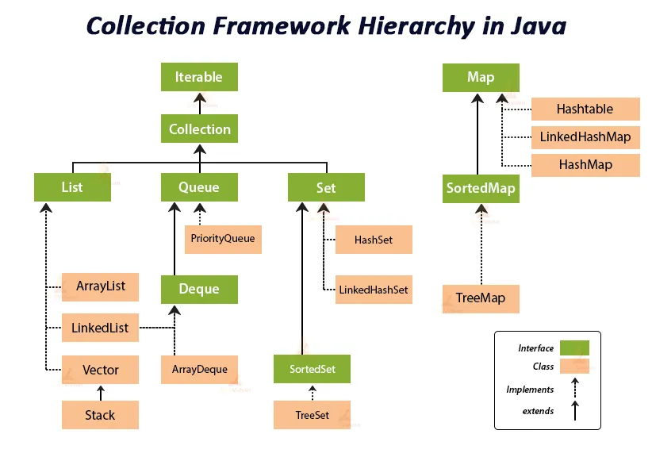

Les collections en Java sont des structures de données permettant de stocker et de manipuler des groupes d'objets de manière efficace. Java propose la bibliothèque Java Collections Framework (JCF), qui fournit plusieurs interfaces et classes pour gérer ces collections.
Analogie des collections
Imaginons un ensemble de boîtes où l'on peut ranger des objets :
Une List 📋 est comme une file de tâches que l'on doit accomplir dans un ordre précis.
Un Set 🏷️ est comme une collection de cartes de visite, où chaque carte doit être unique.
Une Queue 🎫 est comme une file d'attente à la boulangerie, où le premier arrivé est le premier servi.
Une Map 📖 est comme un dictionnaire où chaque mot (clé) a une définition (valeur).
Les interfaces principales du JCF
List : une collection ordonnée avec des doublons
Une List est une collection ordonnée qui permet d’avoir des doublons.
Implémentations courantes :
ArrayList: Tableau dynamique rapide en lecture.
LinkedList: Liste chaînée rapide en insertion/suppression.
📌 Exemple avec ArrayList:
import java.util.*;
public class ListExample {
public static void main(String[] args) {
// Création d'une liste
List<String> tasks = new ArrayList<>();
// Ajout d'éléments
tasks.add("Faire les courses");
tasks.add("Réviser Java");
tasks.add("Faire du sport");
// Affichage
System.out.println("Tâches : " + tasks);
// Accès à un élément par son index
System.out.println("Première tâche : " + tasks.get(0));
// Suppression
tasks.remove("Faire du sport");
System.out.println("Après suppression : " + tasks);
}
}
Note :
On préfère typer sur l'interface (List) plutôt que sur l'implémentation (ArrayList).
Il est impératif d'indiquer le type des éléments entre chevrons (List<String>).
Il faut également des chevrons pour l'instanciation (new ArrayList<>()).
Si l'on souhaite stocker des éléments disparates, il faut typer sur le parent de ces éléments, en dernier recours on peut typer sur Object.
Quand utiliser ?
Si l'accès aux éléments est fréquent → ArrayList
Si les insertions/suppressions sont fréquentes → LinkedList
Set : une collection sans doublons
Un Set est une collection non ordonnée qui ne permet pas de doublons.
Implémentations courantes :
HashSet: Stocke les éléments sans ordre particulier.
LinkedHashSet: Conserve l'ordre d'insertion.
TreeSet: Trie les éléments automatiquement.
Exemple avec HashSet:
import java.util.*;
public class SetExample {
public static void main(String[] args) {
// Création d'un ensemble
Set<String> uniqueNames = new HashSet<>();
// Ajout d'éléments
uniqueNames.add("Alice");
uniqueNames.add("Bob");
uniqueNames.add("Alice"); // Ignoré car déjà présent
// Affichage
System.out.println("Noms uniques : " + uniqueNames);
}
}
Quand utiliser ?
Si l'unicité des éléments est importante → HashSet
Si l'ordre d'insertion doit être préservé → LinkedHashSet
Si les éléments doivent être triés → TreeSet
Queue : une file d'attente (FIFO)
Une Queue suit le principe FIFO (First-In, First-Out), comme une file d’attente.
Implémentations courantes :
LinkedList (en tant que queue)
PriorityQueue (gère les priorités)
Exemple avec Queue:
import java.util.*;
public class QueueExample {
public static void main(String[] args) {
// Création d'une file
Queue<String> queue = new LinkedList<>();
// Ajout d'éléments
queue.offer("Client 1");
queue.offer("Client 2");
queue.offer("Client 3");
// Consultation et suppression du premier élément
System.out.println("Premier client : " + queue.poll());
System.out.println("File après retrait : " + queue);
}
}
Quand utiliser ?
Quand les éléments doivent être traités dans l'ordre d’arrivée.
Map : une structure clé-valeur
Une Map associe une clé à une valeur (comme un dictionnaire).
Implémentations courantes :
HashMap: Stocke sans ordre particulier.
LinkedHashMap: Conserve l'ordre d'insertion.
TreeMap: Trie les clés.
Exemple avec HashMap:
import java.util.*;
public class MapExample {
public static void main(String[] args) {
// Création d'une Map
Map<String, Integer> scores = new HashMap<>();
// Ajout d'éléments
scores.put("Alice", 90);
scores.put("Bob", 85);
scores.put("Charlie", 88);
// Accès à une valeur
System.out.println("Score de Bob : " + scores.get("Bob"));
// Suppression
scores.remove("Charlie");
// Affichage de toutes les entrées
System.out.println("Scores : " + scores);
}
}
Quand utiliser ?
Si l’accès rapide par clé est important → HashMap
Si l’ordre d’insertion doit être respecté → LinkedHashMap
Si un tri sur les clés est nécessaire → TreeMap
Comparatif des collections
Collection
Ordre
Doublons ?
Accès rapide
Insertion rapide
ArrayList
✅ Oui
✅ Oui
✅ Oui
❌ Non
LinkedList
✅ Oui
✅ Oui
❌ Non
✅ Oui
HashSet
❌ Non
❌ Non
✅ Oui
✅ Oui
TreeSet
✅ Trié
❌ Non
✅ Oui
❌ Non
Queue
✅ FIFO
✅ Oui
❌ Non
✅ Oui
HashMap
❌ Non
✅ Clés uniques
✅ Oui
✅ Oui
TreeMap
✅ Trié
✅ Clés uniques
✅ Oui
❌ Non

Les méthodes principales de l'interface Collection
Méthode
Description
boolean add(E e)
Ajoute un élément à la collection.
boolean addAll(Collection<? extends E> c)
Ajoute tous les éléments d'une autre collection.
void clear()
Supprime tous les éléments de la collection.
boolean contains(Object o)
Vérifie si l'élément est présent.
boolean containsAll(Collection<?> c)
Vérifie si tous les éléments d'une autre collection sont présents.
boolean isEmpty()
Vérifie si la collection est vide.
Iterator<E> iterator()
Retourne un itérateur pour parcourir les éléments.
boolean remove(Object o)
Supprime un élément spécifique.
boolean removeAll(Collection<?> c)
Supprime tous les éléments présents dans une autre collection.
boolean retainAll(Collection<?> c)
Garde uniquement les éléments présents dans une autre collection.
int size()
Retourne le nombre d'éléments dans la collection.
Object[] toArray()
Retourne un tableau contenant tous les éléments.
<T> T[] toArray(T[] a)
Retourne un tableau typé contenant tous les éléments.
Exemples d'Utilisation
Convertir un tableau (Array) en List
List<Type> list = Arrays.asList(array);
Caractéristiques :
Taille fixe : La liste retournée est une vue fixe du tableau d'origine. Elle ne permet ni d'ajouter ni de supprimer des éléments, mais la modification des éléments du tableau d'origine se reflète dans la liste.
Rapide : La conversion est efficace, car elle ne crée pas de nouvelle liste mais utilise le tableau sous-jacent.
Utilisation courante :
Initialisation rapide d'une liste.
Passage de tableaux à des méthodes nécessitant une List.
Exemple
import java.util.Arrays;
import java.util.List;
public class ArrayToListConversion {
public static void main(String[] args) {
String[] array = {"Pomme", "Orange", "Cerise"};
List<String> list = Arrays.asList(array);
System.out.println(list);
// Modification possible (modifie aussi array)
list.set(1, "Mandarine");
// Affichage du tableau
// Notez l'utilisation de toString()
System.out.println(Arrays.toString(array));
// Erreur : Ajout ou suppression non autorisé
// list.add("Mangue"); // UnsupportedOperationException
}
}
Contourner la limitation de taille fixe :
Il faut instancier une nouvelle liste.
List<String> modifiableList = new ArrayList<>(Arrays.asList(array));
modifiableList.add("Mangue"); // Fonctionne sans erreur
Convertir une collection en tableau
import java.util.*;
public class ToArrayExample {
public static void main(String[] args) {
Collection<String> animals = new HashSet<>(Arrays.asList("Chien", "Chat", "Oiseau"));
String[] array = animals.toArray(new String[0]);
// [Chien, Chat, Oiseau]
System.out.println(Arrays.toString(array));
}
}
Créer une list à partir de données
import java.util.*;
public class ListOfExample {
public static void main(String[] args) {
List<String> animals = List.of(
"Chat", "Chien", "Dauphin"
);
System.out.println();
}
}
Parcourir avec un Itérateur
import java.util.*;
public class IteratorExample {
public static void main(String[] args) {
Collection<Integer> numbers = new HashSet<>(
Arrays.asList(1, 2, 3, 4, 5)
);
Iterator<Integer> iterator = numbers.iterator();
while (iterator.hasNext()) {
System.out.println(iterator.next());
}
}
}
import java.util.Arrays;
import java.util.List;
public class Main {
public static void main(String[] args) {
List<String> names = Arrays.asList(
"Alice", "Bob", "Charlie"
);
// Utilisation de forEach avec une expression lambda
names.forEach(
name -> System.out.println("Hello, " + name)
);
}
}
import java.util.Arrays;
import java.util.List;
public class Main {
public static void main(String[] args) {
List<Integer> numbers = Arrays.asList(
(1, 2, 3, 4, 5, 6)
);
// Supprime les nombres pairs
numbers.removeIf(n -> n % 2 == 0);
System.out.println(numbers);
}
}
Trier
import java.util.ArrayList;
import java.util.Collections;
import java.util.List;
public class Main {
public static void main(String[] args) {
List<String> fruits = new ArrayList<>(
List.of("Brugnon", "Pomme", "Ananas")
);
// Tri par ordre alphabétique inverse
fruits.sort((a, b) -> b.compareTo(a));
System.out.println(fruits);
}
}
Exercices
Fusion de deux listes sans doublons
Fusionner ces deux listes de fruits sans doublons et sans boucler sur les listes.
List<String> list1 = new ArrayList<>();
list1.add("Pomme");
list1.add("Poire");
list1.add("Orange");
List<String> list2 = new ArrayList<>();
list2.add("Pastèque");
list2.add("Orange");
list2.add("Pomme")
Correction
import java.util.ArrayList;
import java.util.HashSet;
import java.util.List;
public class MergeSetTest {
public static void main(String[] args) {
List<String> list1 = new ArrayList<>();
list1.add("Pomme");
list1.add("Poire");
list1.add("Orange");
List<String> list2 = new ArrayList<>();
list2.add("Pastèque");
list2.add("Orange");
list2.add("Pomme");
// Par construction un set est sans doublon
HashSet<String> mergedSet = new HashSet<>(list1);
mergedSet.addAll(list2);
// Affichage
System.out.println("Liste fusionnée : " + mergedSet);
}
}